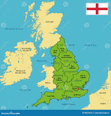

Ricardo I de Inglaterra, conocido como Ricardo Corazón de León, fue uno de los monarcas más célebres de la Edad Media. Su vida estuvo marcada por la guerra, las cruzadas y una imagen de valentía que lo convirtió en leyenda.
Haz clic en las zonas del mapa para descubrir más información sobre los territorios de Ricardo o visitar fuentes históricas externas.

El Reino de Inglaterra fue el núcleo principal del poder de Ricardo Corazón de León, aunque pasó gran parte de su vida en Francia y en las Cruzadas.
| Territorios de Ricardo Corazón de León | ||
|---|---|---|
| Región | Ubicación | Importancia Histórica |
| Inglaterra | Londres y Oxford | Centro político y monárquico |
| Nottingham | Escenario de las leyendas de Robin Hood | |
| Aquitania | Suroeste de Francia | Base de poder familiar heredada de Leonor de Aquitania |
Ricardo es recordado por su valentía y liderazgo en batalla, aunque también por sus ausencias del reino y su costoso rescate.